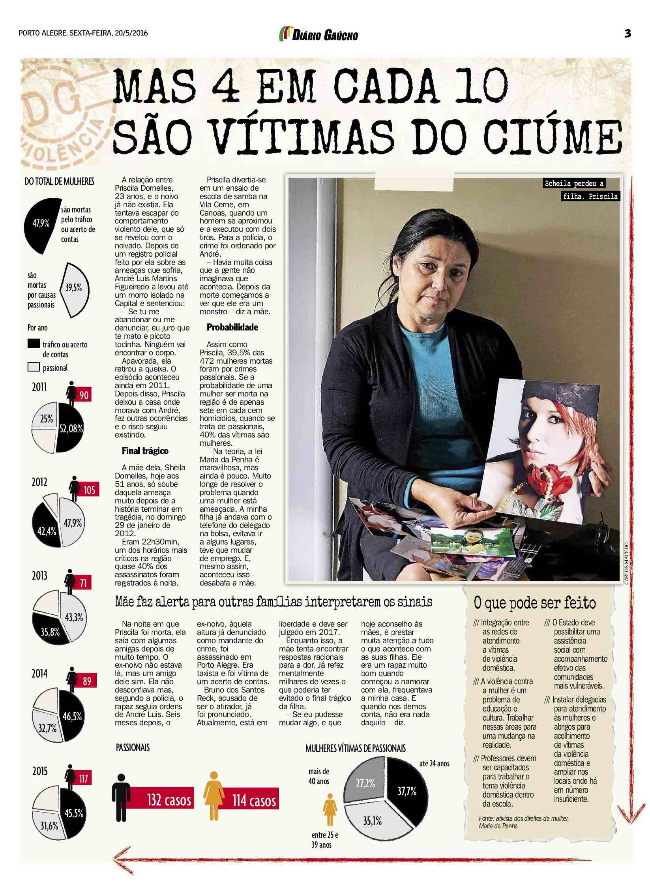
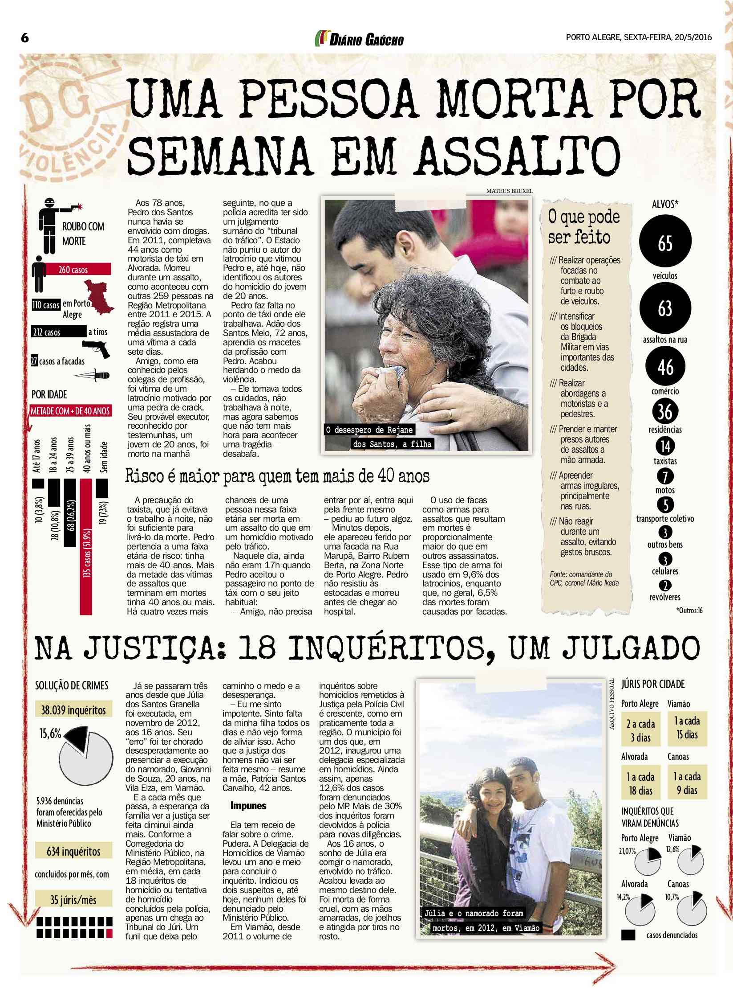
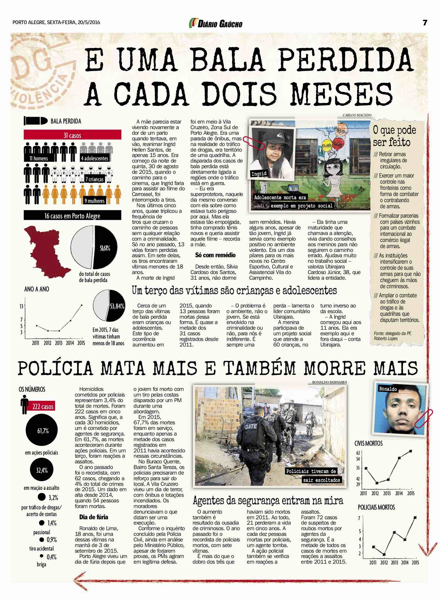
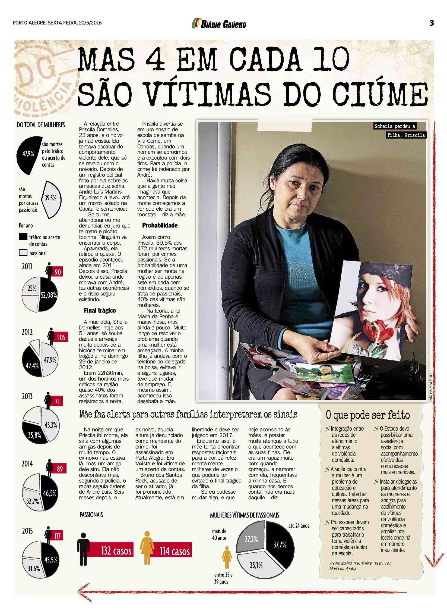
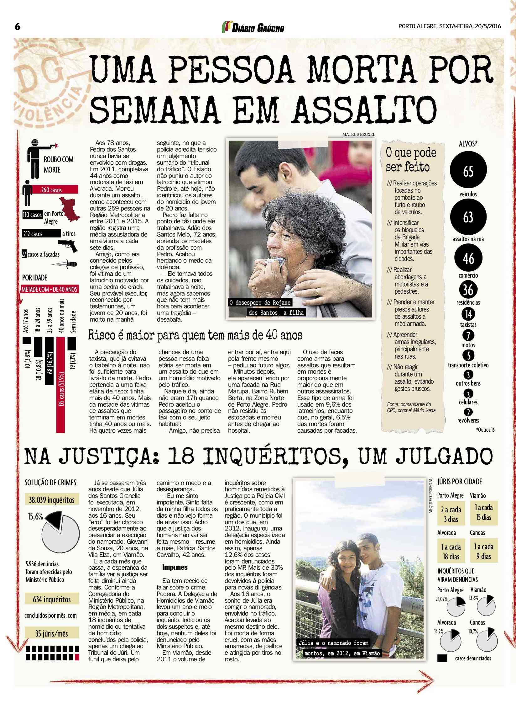
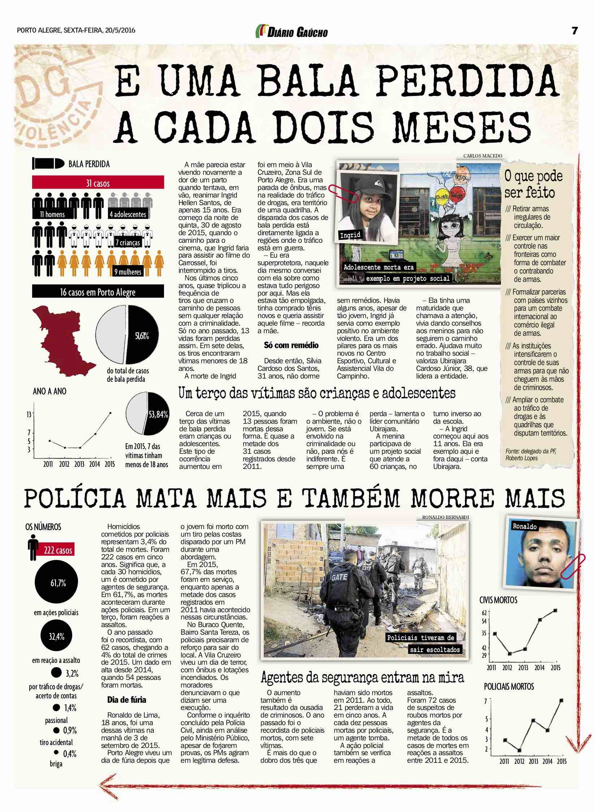
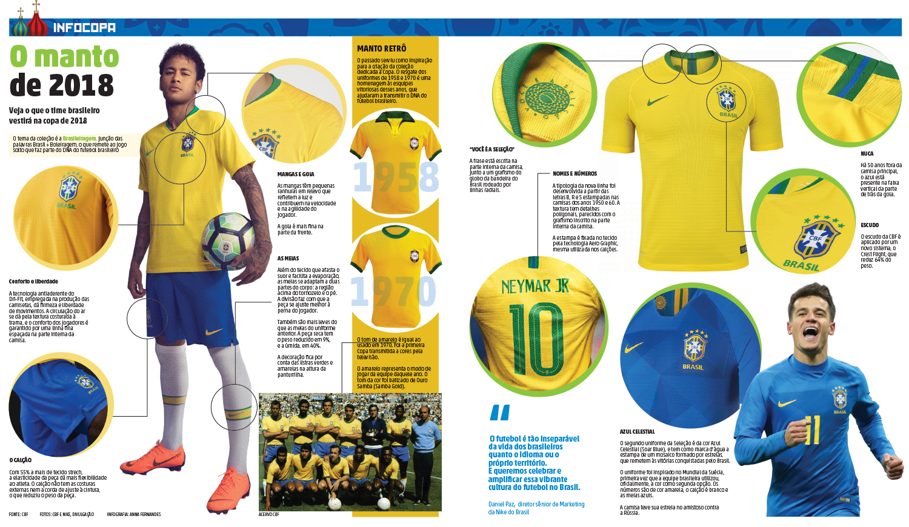
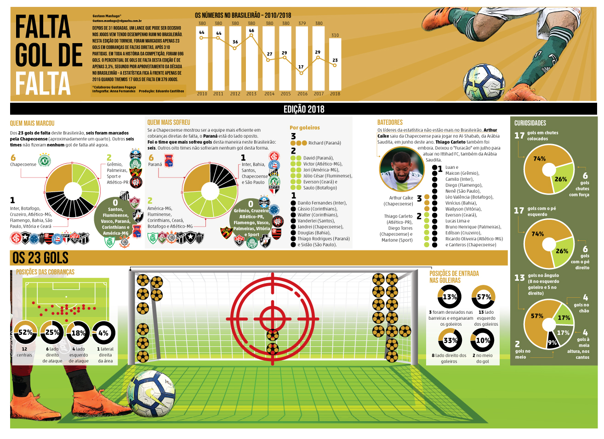
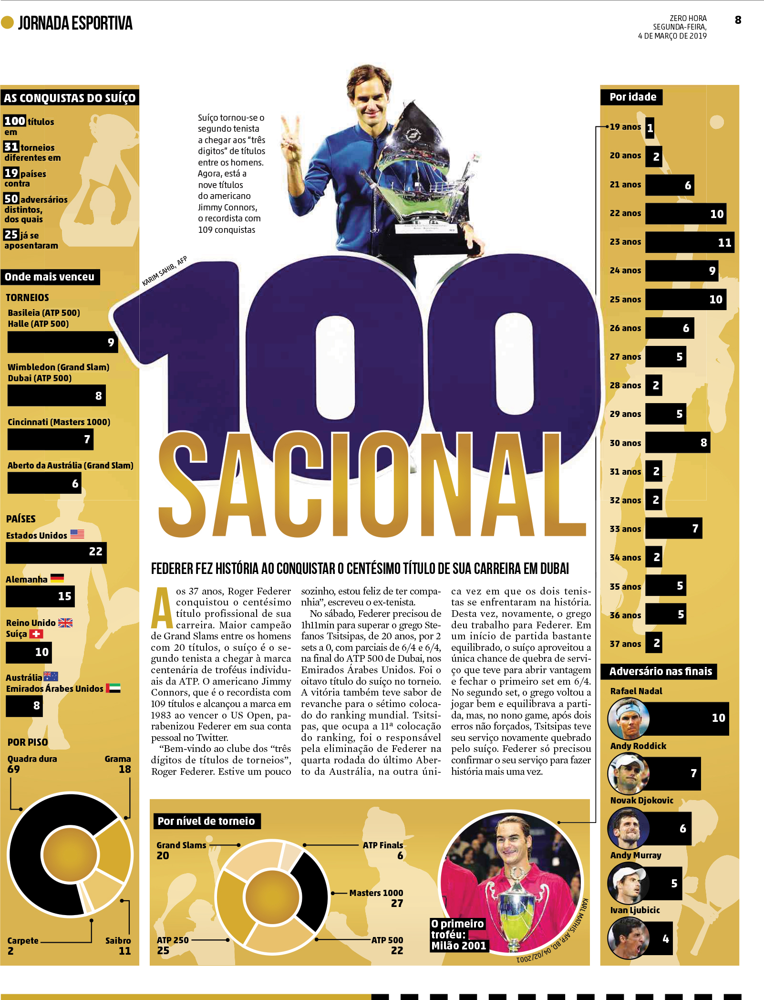
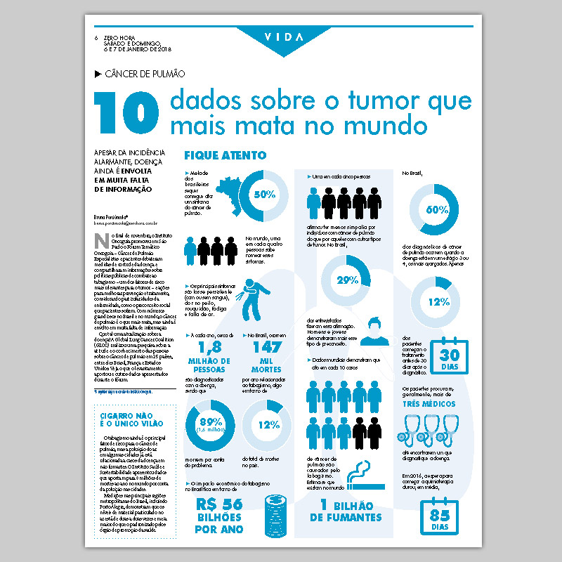

Infográficos
Enem (GaúchaZH)

Análise estatística do desempenho das 3,89 milhões de pessoas que realizaram o Exame Nacional do Ensino Médio (Enem) em todo o Brasil em 2018. Especial realizado pelo Grupo de Jornalismo de Dados do Grupo RBS, publicados no Jornal Zero Hora e no site GaúchaZH. As versões publicadas em meio digital podem ser conferidas aqui, aqui e aqui.
Dossiê da Violência (Diário Gaúcho)
 





Especial publicado no site e no jornal Diário Gaúcho sobre o levantamento realizado pela equipe dos homicídios ocorridos na Grande Porto Alegre. Recebeu o Prêmio RBS melhor reportagem.
Copa do mundo (GaúchaZH)
Infográfico sobre a camisa da seleção brasileira na Copa do Mundo na Rússia. Faz parte de uma série de especiais sobre a Copa de 2018, feitos para o meio impresso e o digital. A versão para o meio digital está disponível neste link.
Roubos a motoristas de app (GaúchaZH)
Análise dos roubos praticados contra motoristas de aplicativos no Rio Grande do Sul. Foram produzidas versões para o jornal impresso e para o meio digital. A matéria publicada no site pode ser conferida aqui.
Violência contra jornalistas (Editorial J)

Infográfico produzido para o jornal dos estudantes da PUCRS Editorial J, sobre os riscos que os jornalistas corriam pelo mundo. A edição ganhou o prêmio de melhor Publicação Impressa (Jornal) do 27º Set Universitário, e está disponível neste link.
Gols de falta (Zero Hora)
Infográfico produzido para o jornal Zero Hora com o balanço dos gols por conbrança de faltas no Brasileirão.
100º Título (Zero Hora)
Infográfico com um panorama da carreira do tenista Roger Federer, na conquista do seu 100º título. Publicado no jornal Zero Hora.
Câncer de Pulmão (Zero Hora)
Infográfico desenvolvido para o Caderno Vida, do jornal Zero Hora, sobre câncer no pulmão.